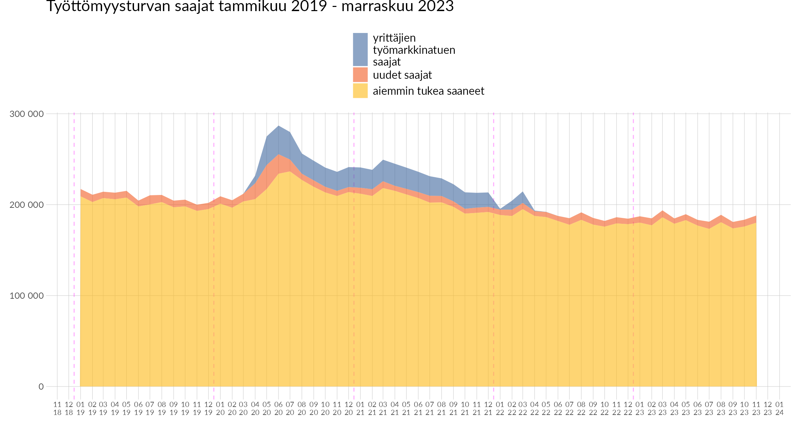
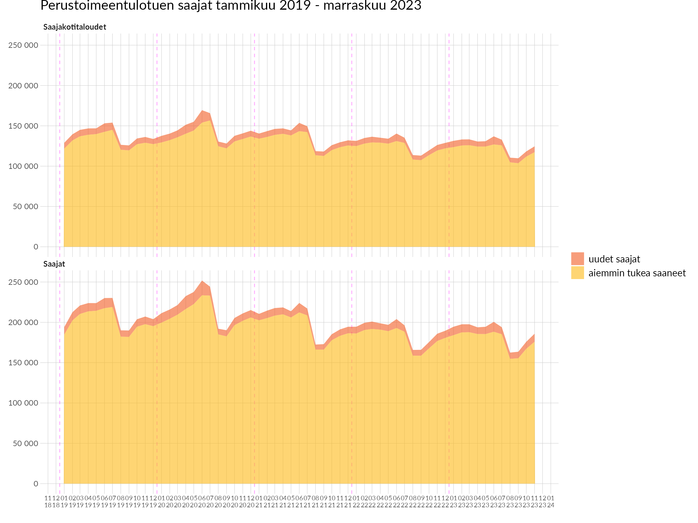
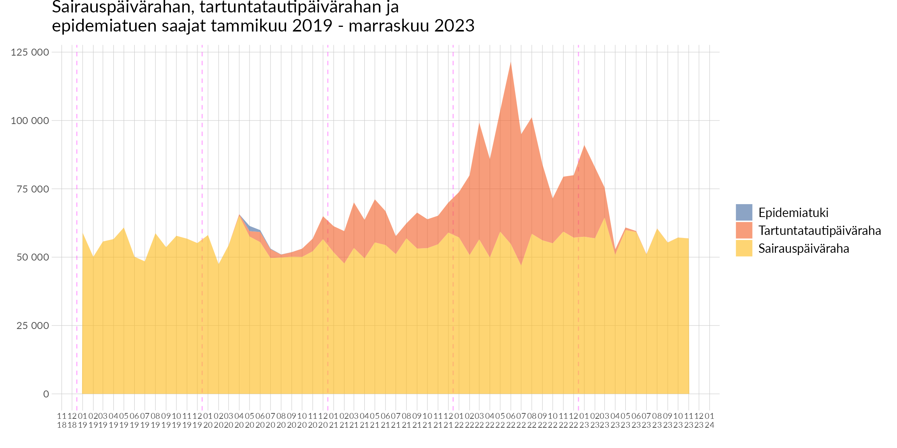
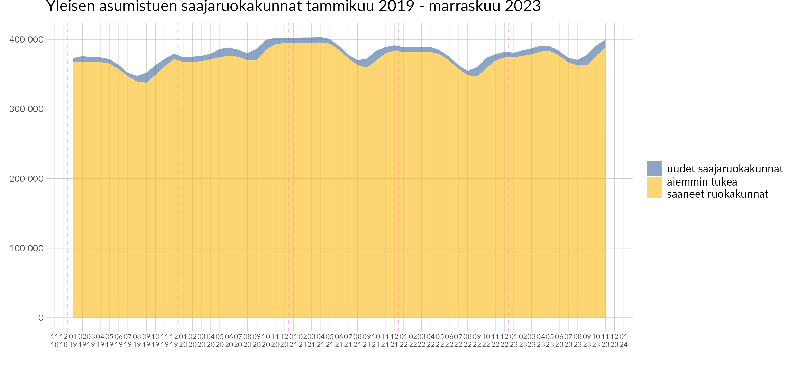
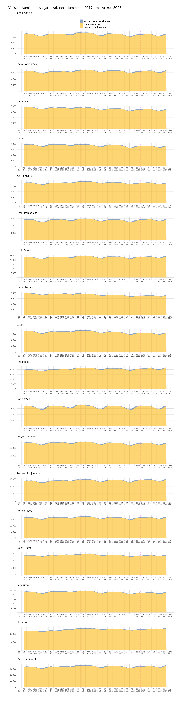
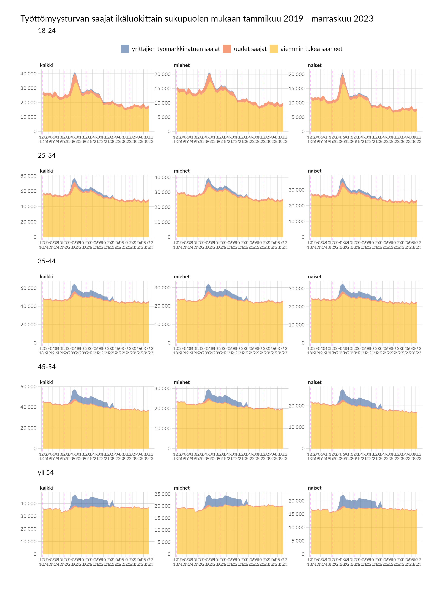
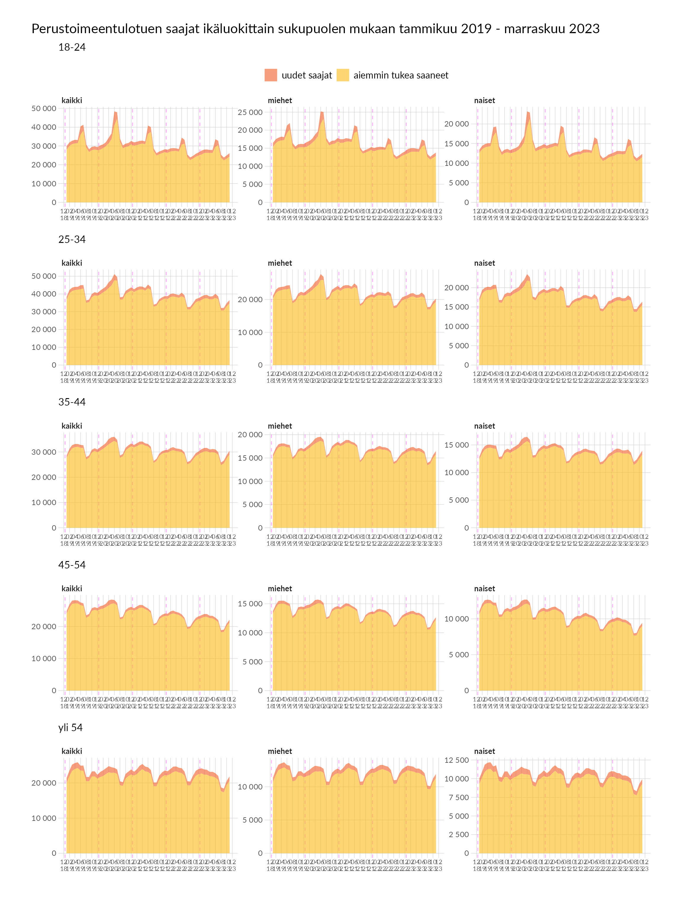
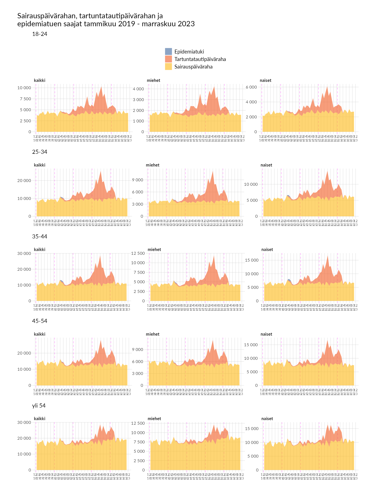

Etuuksien saajat
Sivustolla julkaistut työttömyysturvan saajien määrätiedot on korjattu ma 18.1.2021. Aiemmin tukea saaneiden luku on virheellisesti sisältänyt myös yrittäjien työmarkkinatuen saajat. Virhe on vaikuttanut sekä kuvioihin että taulukoihin. Vastaava korjaus kuvioihin työttömyysturvan saajista ikäluokittain ja sukupuolittain on tehty 18.5.2021.
1 Saajien määrien kehitys kuukausittain
1.1 Työttömyysturva
1.2 Perustoimeentulotuki

1.3 Sairauspäiväraha, tartuntatautipäiväraha ja epidemiatuki

1.4 Yleinen asumistuki

2 Saajat maakunnittain


3 Saajat sukupuolittain ja ikäluokittain
Ikäryhmätarkastelun nuorin ikäluokka on muutettu 1.4.2021 kattamaan vain 18–24-vuotiaat, kun aiemmin se sisälsi myös muut alle 25-vuotiaat. Alle 18-vuotiaat ovat edelleen mukana kokonaistarkastelussa. Eniten vaikutusta muutoksella on perustoimeentulotuen nuorimman ikäluokan saajamääriin. Aiempi luokittelu oli käytössä tilannekatsauksissa, jotka on kirjoitettu ennen 1.4.2021.


